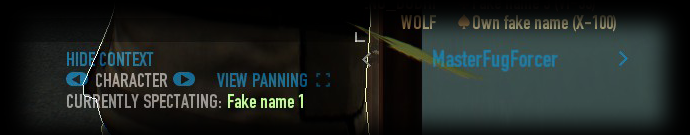
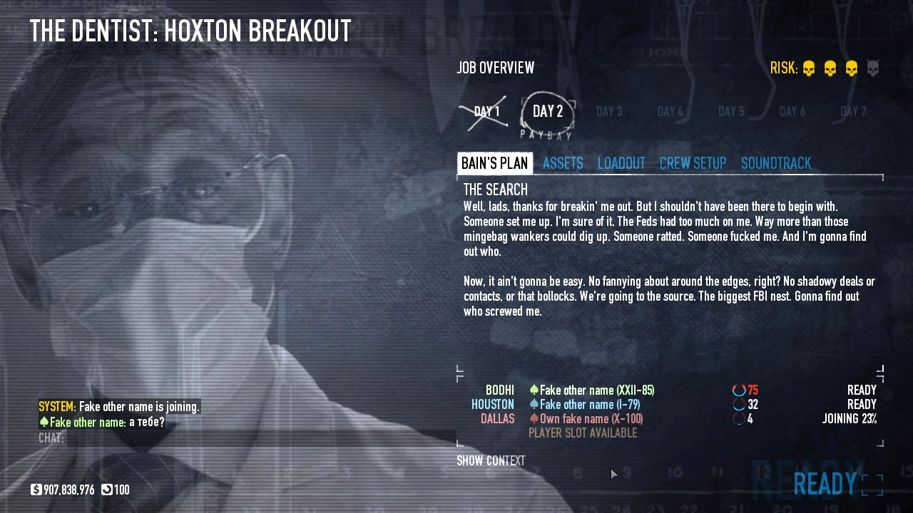
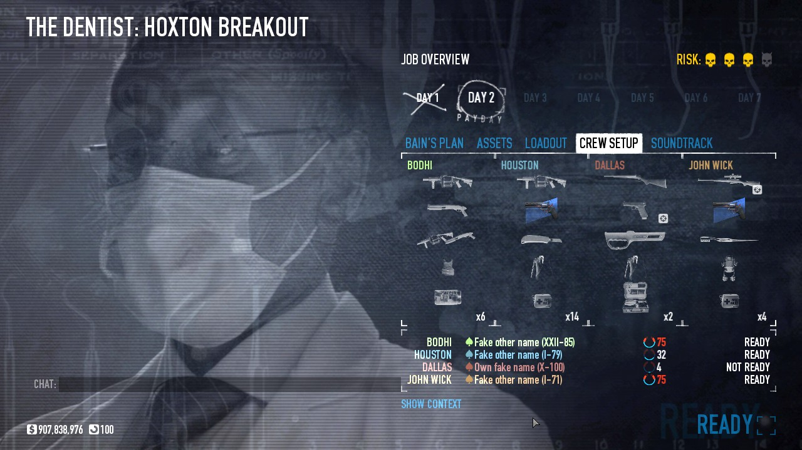
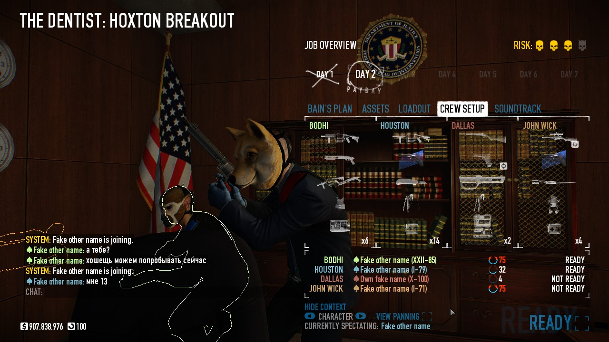
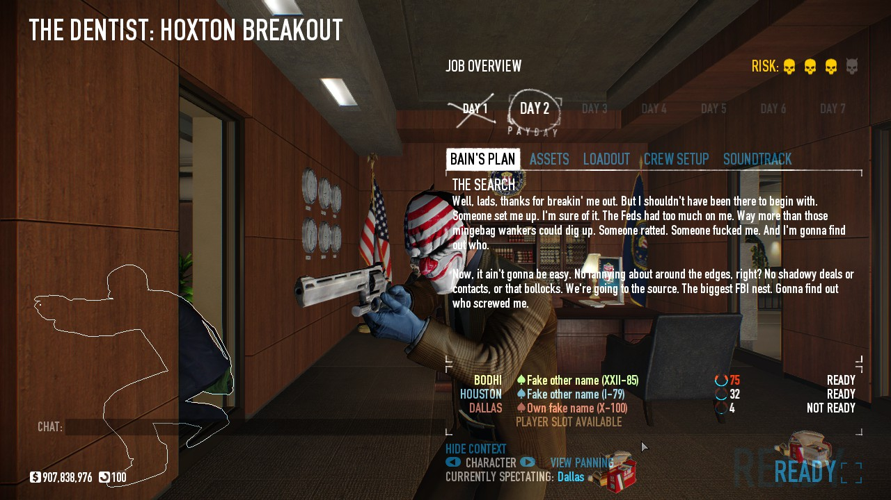

About
Tired of having to ask "Safe?" before spawning? Why have to ask if the game is in stealth, when you can see for yourself? Stealth players, this one's for you.
Sick of spawning into a game, only to join another player's fall into custody or get instantly downed by a conveniently positioned saiga dozer? (Yes, these actually happened to me) Loud players, this one's for you, too.
This mod allows you to hide the mission briefing GUI's background on demand to let you view the game's context (e.g. whether the game is still in stealth or has gone loud, whether it is safe to spawn, etc.) before you spawn. While the background is hidden, your view of the game will be very similar to that of a player in custody - you will be orbiting a character (both players and team AI are supported) as they go about their business as usual. Several buttons are added to the mission briefing GUI to allow toggling the background transparency and switching of characters to spectate for additional context.
Previews
New in 0.0.2.2 / revision 4:

(the following are old screenshots from 0.0.2 / revision 2)




Usage
Installation of the mod is straightforward - simply install the mod the same way as any other BLT mod. This mod integrates its options menu as a submenu of BLT's Mod Options menu.
Notes and limitations
There is currently no way to pan the view (which would normally be possible when viewing the game in custody)Resolved in 0.0.2 / revision 2As you may have noticed in the above screenshots, turning the background transparent also causes the risk and days icons to disappear. Remember to re-enable the background again if you wish to check the risk level and/or the current day of the jobResolved in 0.0.2 / revision 2- While view panning is enabled, left-click or right-click anywhere to end it. No buttons nor UI elements (except the chat entry box) will respond to clicks while view panning mode is active. This is by design since it is impossible to return the cursor to the bottom of the screen to end it without also affecting the desired view angle
- The Show Context button will be disabled while loading, if the host has not started the game (i.e. the host's status is Not Ready), or if you are hosting the game (since there are no characters to spectate. For the same reason, the button is not added to the mission briefing GUI in singleplayer mode)
- If a team AI-controlled character enters a vehicle, view tracking no longer updates when they leave the vehicle (i.e. the view remains at their last position on the vehicle even though they are no longer there). This bug does not occur for human players
- The localizations loading code was from TdlQ's excellent Lobby Player Info mod
- The French translations were provided by Mr.PlayYou [BE]
Download
http://download.paydaymods.com/download/latest/TMBGUI
Changelog
0.0.1 / revision 1:
- Initial release
0.0.2 / revision 2:
- Resolved an issue related to non-16:9 aspect ratio screen resolutions where
portions of the scene would be visible when they should not be if they are not
covered by the mission briefing GUI panel (thanks to Beardless Almir for
reporting the issue)
- Changed element hiding to exclude the risk level and days icons. Both elements
will now remain visible when the background is made translucent
- Added 'Mod Options' configuration menu
- Changed buttons and interactive UI elements added by this mod to only respond to
left mouse clicks
- Iconized the 'Previous character' and 'Next character' buttons to make them more
compact
- Character and player names are no longer forced to uppercase
- Added view panning support and accompanying 'View panning' checkbox
- While view panning is enabled, left-click or right-click anywhere to end it.
No buttons nor UI elements (except the chat entry box) will respond to clicks
while view panning mode is active. This is by design since it is impossible to
return the cursor to the bottom of the screen to end it without also
affecting the desired view angle
- Added element fading support, the mission briefing GUI background and UI
elements added by this mod will now fade smoothly into / out of view
- Added FadeElements and FadeDuration to enable/disable and control the fade
duration, respectively
- AutoHideBackground now defaults to true
- Refactored the TranslucentMissionBriefingGUI.ElementsToHide table to use a map
structure instead of an array structure
0.0.2.1 / revision 3:
- Added French translation by Mr.PlayYou [BE]
- Resolved clipping issues related to the 'Show Context' button
- Added crash fix for running this mod alongside others that hook
MissionBriefingGui:init() and never call the original function (better hooks
please, BLT)
- Note that such mods remain incompatible with this mod, this change merely
prevents crashes from occurring due to this incompatibility
0.0.2.2 / revision 4 'Stability++':
- Fixed an elusive crash in native code (hopefully)
- The camera now defaults to following the host
- If they are in custody, it falls back to the next available player or team
AI
- Changed 'View panning' checkbox texture
- Adjusted mod priority for better compatibility with other UI mods
- View panning is no longer frozen while players are dropping in
- Floating name labels are now displayed above players and team AI
- Moved the mod's UI elements to resolve a collision with the multi-profile
selector
- Fixed an issue where the mission briefing GUI background visibility is
toggled whenever profiles are switched
- Added preliminary support for themes to improve visual compatibility with
other UI mods
0.0.2.3 / revision 5 '555':
- Fixed a crash and incompatibility issue when HoloUI is present (thanks to
SlideDrum for the report and Luffy for the code fixes)
- Added rate limiting for context toggling to work around a crash in native
code that could occur when toggling is performed too frequently
0.0.2.4 / revision 6 'Change for change's sake':
- Updated for compatibility with BLT 2.x
- Added an empty placeholder icon (cba to make a proper one atm)
- Adjusted the mod's cleanup behavior for native objects to better conform with
the game's design
- Fixed an issue where some other instances of MenuBackdropGUI that are
irrelevant to the mission briefing GUI are also turned translucent (e.g.
offshore account displays in the safe house)
- Fixed a crash issue that could occur when disconnecting from a game with the
mission briefing GUI's background made translucent, but without first
spawning into the level